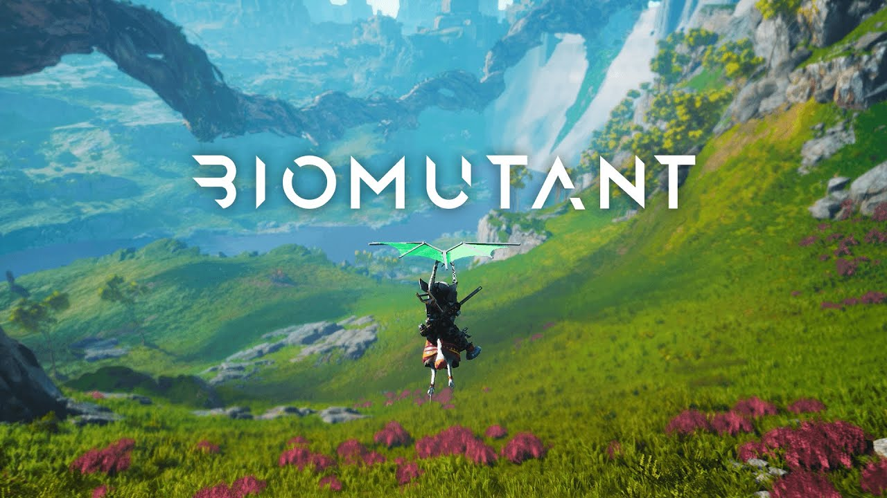
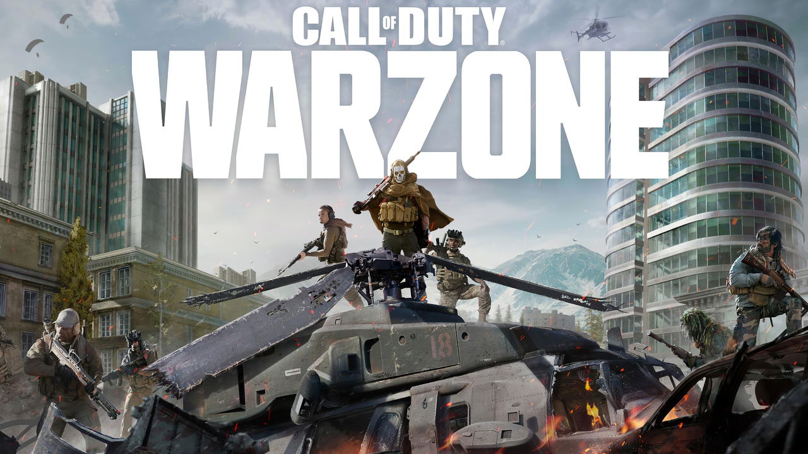
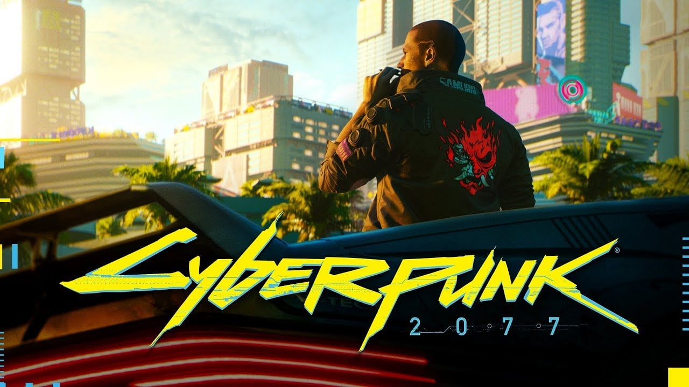
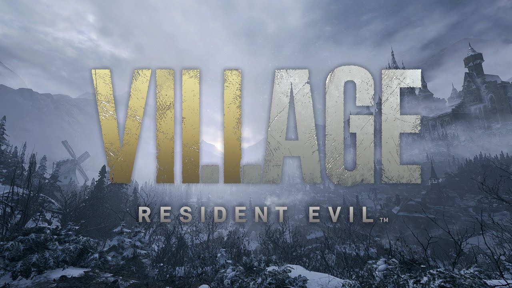

-
 Biomutant ganha novo trailer mostrando o mundo do jogo
-
 Call of Duty Warzone volta à década de 80 com Verdansky 84
-
 Reembolsos de Cyberpunk 2077 representam 0,5% das vendas iniciais
-
 Além de Dimitrescu: conheça os vilões de Resident Evil Village